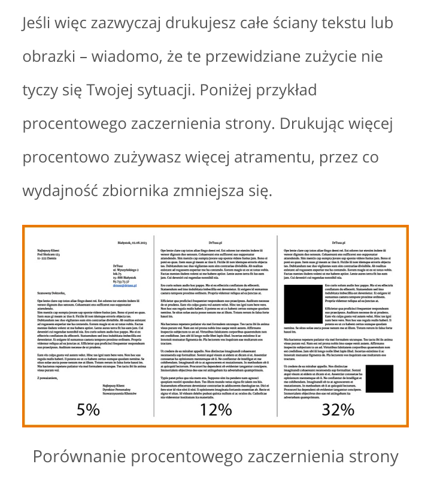

Moja opinia o drukarkach HP🖨️
W 2024 kupiłem drukarke HP DiskJet 4222e za 350 złotych. Firmy o złej reputacji pod względem tych urządzeń. Sam raczej nie określiłbym tego jako jednoznacznie wadliwej polityki, ale polecić tego nie mogę. Własna drukarka ma niewiele zalet ale miejscami przeważają one nad kosztami. Jest to jednak produkt który należy świadomie kupować, nie zaś w razie czego. Przeciętnemu użytkownikowi wystarczy punkt ksero.
1. Błędy jakie popełniłem❌:
- - Zerwałem miedzianą naklejke bo nie miałem pojęcia jak realnie działają kartridże. Jest to wina producenta, bo w papierowej instrukcji nic o tym nie pisze, kiedy w elektronicznej aby nawet tego nie dotykać.
- - Zakupiony tusz Setup z Allegro był przeterminowany już w 2023, a cena jak oryginalna, mimo to zadziałał. Jak kupować to tylko od pewniejszych sprzedawców lub bezpośrednio od HP. Sam podział na tusze Setup i zwykłe jest moim zdaniem idiotyczny.
- - Zamiast drukować raz w tygodniu jedną strone, czekałem z tym dłużej przez co tusz zasychał. Da się część odzyskać drukując niewyraźnie, po kilku stronach jest normalnie, lecz to zwykła strata atramentu.
2. Koszt zmalał w 2026.📉Pamiętam jak jednostkowy kartridż kosztował 66/69 zł, teraz dwupak można kupić za 104 zł. Podobnie XL staniał z 202 na 178 zł, przynajmniej z tego co widziałem w lokalnym sklepie.
3. Pułapki/mechanizmy jakie stosuje HP⚠️
- - Podawana ilość kartek jakie można wydrukować jest w idealnych warunkach gdzie zapełnione jest tylko 5% kartki. Realnie ze 120 wychodzi może połowa, a w przypadku drukowania zdjęć liczba ta spada do 20 kartek.
- - Sprzedawany jest nie sam tusz tylko kartridż/kasetka, w skład której wchodzą: pudełko, tusz, głowica, chip. Ma to o tyle zalete że jak głowica sie zepsuje lub zaschnie, to się wymienia kartridż. W tańszej drukarce wymiana głowicy jest w cenie drukarki.
- - Subskrypcja Instant Ink najtańsza za 6 zł zawiera ledwie 10 stron, ale jest to oferta która większości wystarczy. Klienci jednak kupują na zapas za 26 zł miesięcznie 50 stron, z czego mogą nie zużywać całego limitu, pomimo że kumuluje się do 3 miesięcy.
4. Alternatywy i optymalizacja🔄
- -> Zakup drukarki laserowej. Podstawowy toner chyba jest na 2000 stron, mimo że realnie wystarczy to na połowe, koszt wychodzi znacznie taniej, a proszek nie zasycha. Wadą jest generowanie pyłu, ozonu oraz wyższy pobór prądu. Wystarczy wietrzyć pomieszczenie.
- -> Zakup drukarki na tusz dolewany. Deklarowana ilość stron również sięga tysięcy przy kosztach jednostkowych podobnych do kartridży. Wadą takowej jest sam koszt przynajmniej 800 złotych.
- -> Mimo wszystko subskrypcja Instant Ink jeśli drukujemy dużo zdjęć. Koszt pozostaje stały za strony, pod warunkiem że te zdjęcia to tylko część nie całe zużycie, bo wtedy system może wymusić wyższy plan.
- -> Drukowanie jednej strony tygodniowo i tryb oszczędny, który ma zapewnić mniejsze zużycie o 30% materiału.
- -> Kupowanie zamienników. Osobiście tego nie robiłem ale niektórzy chwalą takowe rozwiązanie. Trzeba się jednak liczyć z ryzykiem że nie będzie działać, że będzie przeciekać, że jest mniej niż deklarowane i wysycha szybciej.
- -> Drukarka termiczna. Najtańsza i najmniejsza opcja, ale to ta sama technologia co paragony sklepowe, nadaje się tylko do tekstów, które mają być dosłownie jednorazowe. Wydruk z czasem blaknie pod wpływem światła, więc nic co ma przetrwać dłużej.
- -> Drukowanie w Punktach Ksero. Koszt jednej strony może być do dwóch razy wyższy, ale płacimy tylko wtedy gdy tego potrzebujemy, bez dopłacania za możliwość drukowania u siebie w przyszłości.
5. Kiedy własna drukarka ma sens✅
Właściwie jedynym Za jest argument gejowskiego plakatu. W przeszłości była głośna sprawa że drukarz odmówił wykonania takiego, przez co sprawa ciągnęła się po sądach. Rozwijała się dyskusja czy przedsiębiorca może odmówić wykonania usługi?
- + Własny sprzęt (jeszcze) nie pyta nas o światopogląd, drukarz może odmówić.
- + Jeśli ktoś mieszka na wsi, to koszt dojazdu do punktu ksero niweluje oszczędności. Z drugiej strony to właśnie w miastach są urzędy.
- + Mniejsze ryzyko wycieku danych niejawnych typu finansowych czy medycznych. O ile w przyszłości rząd nie wymyśli aby użyć drukarek do szpiegowania.
Generalnie negatywy występują ale nie są takie duże jak twierdzą niektórzy recenzenci/niezadowoleni klienci. Zdarza się że drukarka się zacina, jednak to częściej problem braku tuszu niż celowych problemów w oprogramowaniu.

Wstecz